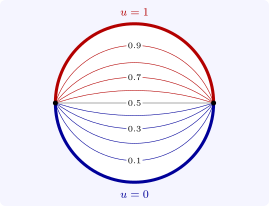

8.3 The disc and Poisson’s formula
In polar coordinates \(\Delta u = u_{rr} + \frac 1ru_r + \frac 1{r^2}u_{\theta \theta }\). Separating \(u = R(r)\Theta (\theta )\) in the disc \(r < a\) gives \(\Theta '' + k^2\Theta = 0\) with \(\Theta \) \(2\pi \)-periodic, so \(k = 0, 1, 2, \ldots \), and \(r^2R'' + rR' - k^2R = 0\), an Euler equation with solutions \(r^{\pm k}\) (\(1\) and \(\log r\) when \(k = 0\)). Boundedness at the origin keeps \(r^k\), so \[ u(r, \theta ) = \frac {a_0}2 + \sum _{k = 1}^\infty \Bigl (\frac ra\Bigr )^k(a_k\cos k\theta + b_k\sin k\theta ) , \] with \(a_k\), \(b_k\) the Fourier coefficients of the boundary values \(g(\theta ) = u(a, \theta )\). Inserting the coefficients and summing the geometric series \[ \frac 12 + \sum _{k \geq 1}\Bigl (\frac ra\Bigr )^k\cos k(\theta - \varphi ) = \operatorname {Re}\Bigl (\frac 12 + \frac {\zeta }{1 - \zeta }\Bigr ) = \frac 12\cdot \frac {a^2 - r^2}{a^2 - 2ar\cos (\theta - \varphi ) + r^2}, \qquad \zeta = \frac rae^{i(\theta - \varphi )} , \] gives the following.
Theorem 8.3.1 (Poisson’s formula). Let \(g\) be continuous on the circle \(r = a\). Then \[ u(r, \theta ) = \frac 1{2\pi }\int _0^{2\pi }\frac {a^2 - r^2}{a^2 - 2ar\cos (\theta - \varphi ) + r^2}\,g(\varphi )\,d\varphi \qquad (r < a), \] with \(u = g\) on \(r = a\), is harmonic in the disc and continuous on the closed disc. It is the unique solution of the Dirichlet problem.
Proof. The Poisson kernel \(P(r, \theta ) = \frac {a^2 - r^2}{2\pi (a^2 - 2ar\cos \theta + r^2)} = \frac 1{2\pi }\operatorname {Re}\frac {a + z}{a - z}\), \(z = re^{i\theta }\), is the real part of an analytic function, hence harmonic, and \(u\) is harmonic by differentiation under the integral. Taking \(g = 1\), for which \(u = 1\), shows \(\int _0^{2\pi }P(r, \theta - \varphi )\,d\varphi = 1\); and \(P > 0\). If \(\delta \leq |\theta - \varphi | \leq \pi \), the denominator is at least \(a^2 - 2ar\cos \delta + r^2 \geq a^2\sin ^2\delta \), so \(P \to 0\) uniformly there as \(r \to a\). Hence, exactly as for the heat kernel in Theorem 6.1.1, \(u(r, \theta ) \to g(\theta _0)\) as \((r, \theta ) \to (a, \theta _0)\). Uniqueness is the maximum principle. □
At the centre the kernel is \(1/2\pi \) and the formula is the mean value property. Since \(\frac {a - r}{a + r} \leq 2\pi P \leq \frac {a + r}{a - r}\), a non-negative harmonic function satisfies Harnack’s inequality \[ \frac {a - r}{a + r}\,u(0) \leq u(r, \theta ) \leq \frac {a + r}{a - r}\,u(0) , \] which bounds how much a positive harmonic function can vary. Applied to discs inside any domain, Poisson’s formula shows that harmonic functions are infinitely differentiable, indeed real analytic, whatever their boundary values. And the mean value property over large balls gives Liouville’s theorem: a bounded harmonic function on all of \(\mathbb R^n\) is constant (Problem 8.5.4).
Example 8.3.2. Let the upper half of the unit circle be held at \(u = 1\) and the lower half at \(u = 0\). The solution is \[ u = \frac 12 + \frac 1\pi \arctan \frac {2r\sin \theta }{1 - r^2} , \] because \(\arctan \frac {2y}{1 - x^2 - y^2}\) is the argument of \((1 + z)/(1 - z)\), a harmonic function, and the formula has the right limits: \(u \to 1\) on the upper arc and \(u \to 0\) on the lower. Its level curves \(2y/(1 - x^2 - y^2) = \text {const}\) are circular arcs through the two points \(\pm 1\) where the data jump (Figure 11); at the centre \(u = \frac 12\), the average of the boundary values.

Separation also works in a rectangle. On \(0 < x < 1\), \(0 < y < 1\) with \(u = 1\) on the top side and \(u = 0\) on the other three, \(u = \sum _k b_k\sin (k\pi x)\sinh (k\pi y)/\sinh k\pi \) with \(b_k = 4/k\pi \) for odd \(k\). By symmetry the value at the centre is exactly \(\frac 14\): the four problems with one hot side add up to the problem with \(u = 1\) on the whole boundary, whose solution is \(1\), and they have equal values at the centre.
Questions on this section
Stuck on something here? Ask below and it stays attached to this topic.